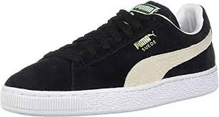
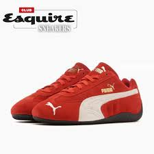

Zapatos deportivos con estilo de vida para hombres
Catálogo
Q450 - PUMAX MOUSTRO CRAFT
Q500 - DEASY RIDER PRIDE

Q300 - TENIS SUEDE CLASPIC

Q400 - SPEEDCAT OG
Contacto del Programador
Elias Enríquez

 Q450 - PUMAX MOUSTRO CRAFT
Q450 - PUMAX MOUSTRO CRAFT
 Q500 - DEASY RIDER PRIDE
Q500 - DEASY RIDER PRIDE